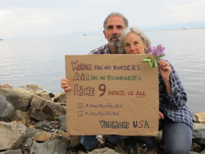

Stop Tar Sands:
#DirectlyAffected
|
View Montreal Portland Pipeline in a larger map |
What Exxon doesn't want you to see |
Our friends at Climate Justice
Montréal need our help. They are submitting testimony
Tuesday, May 14 with the National Energy Board to stop Enbridge from
reversing its “Line 9″ oil pipeline (see the map below) and pumping tar
sands products from Alberta all the way to Montréal. Next stop for tar
sands: New England.
The NEB says that only those who are “directly
affected” can submit testimony. Climate Justice says: we are ALL
directly affected (“directement touché”). Let’s help our Canadian
allies – submit a photo before Tuesday, May 14, using these
simple instructions:
Call to Action!
We are ALL directly affected. Our communities,
our food, our water, our air, and our future are impacted by the flow
of tar sands coming to Québec through the Line 9 pipeline. We ask you to
show how you are directly affected, on the level that is meaningful for
you.
{kind=link}

1. Write down on a piece of paper why you are affected by the Line 9 pipeline reversal and/or tar sands2. Write below your reason, “I am #directlyaffected” with a box and a checkmark before it (See examples here)
3. Take a picture of yourself! (Think about where you are taking your photo: With your community? In front of a forest or river you love? In front of the Line 9 pipeline? In front of Enbridge quarters?)
4. Send it to directementtouche@gmail.com
5. Share! #DirectlyAffected
Act now to keep tar sand oil out of VT:
Sign a petition
| Declare your town Tar Sands Free
Enroll in the Tar Sands Free Fleet Fuel Program
Become a campaign partner
| Become a campaign sponsor
Learn more:
NEW!! Crude Behavior: National Wildlife Federation report
Going in Reverse: The Tar Sands Oil Threat to Central Canada and New England
Big Oil’s Big Plans for Tar Sands in New England
ExxonMobil Ownership of the Portland-Montreal pipeline
About the Alberta tar sands
See the pipeline on Google Maps
{kind=link}